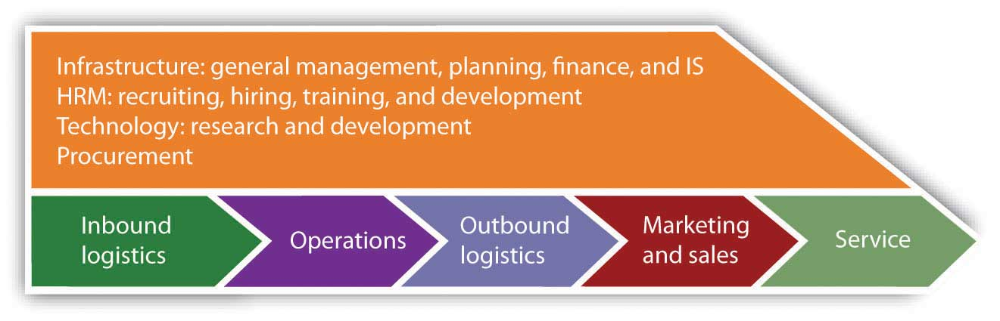

After studying this section you should be able to do the following:
The value chainThe “set of activities through which a product or service is created and delivered to customers.” is the “set of activities through which a product or service is created and delivered to customers.”Michael Porter, “Strategy and the Internet,” Harvard Business Review 79, no. 3 (March 2001): 62–78. By examining the activities in a firm’s value chain, managers are able to gain a greater understanding of how these factors influence a firm’s cost structure and value delivery. There are five primary components of the value chain and four supporting components. The primary components are as follows:
The secondary components are the following:
While the value chain is typically depicted as it’s displayed in Figure 2.7 "The Value Chain", goods and information don’t necessarily flow in a line from one function to another. For example, an order taken by the marketing function can trigger an inbound logistics function to get components from a supplier, operations functions (to build a product if it’s not available), or outbound logistics functions (to ship a product when it’s available). Similarly, information from service support can be fed back to advise research and development (R&D) in the design of future products.
Figure 2.7 The Value Chain
An analysis of a firm’s value chain can reveal operational weaknesses, and technology is often of great benefit to improving the speed and quality of execution. Software tools such as supply chain management (SCM: linking inbound and outbound logistics with operations), customer relationship management (CRM: supporting sales, marketing, and in some cases R&D), and enterprise resource planning software (ERP: software implemented in modules to automate the entire value chain), can have a big impact on more efficiently integrating the activities within the firm, as well as with its suppliers and customers. But remember, these software tools can be purchased by all competitors. Although they can cut costs and increase efficiency, if others can buy the same or comparable products then these technologies, while valuable, may not yield lasting competitive advantage.
Even more important to consider, if a firm adopts software that changes a unique process into a generic one, it may have co-opted a key source of competitive advantage particularly if other firms can buy the same stuff. This isn’t a problem with accounting software. Accounting processes are standardized and accounting isn’t a source of competitive advantage, so most firms buy rather than build their own accounting software. But using packaged, third-party SCM, CRM, and ERP software typically requires adopting a very specific way of doing things, using software and methods that can be purchased and adopted by others. Dell stopped deployment of the logistics and manufacturing modules of a packaged ERP implementation when it realized that the software would require the firm to make changes to its unique and highly successful operating model and that many of the firm’s unique supply chain advantages would change to the point where the firm was doing the same thing using the same software as its competitors. By contrast, Apple had no problem adopting third-party ERP software because the firm competes on product uniqueness rather than operational differences.
From a strategic perspective, managers can also consider the firm’s differences and distinctiveness compared to rivals. If a firm’s value chain cannot be copied by competitors without engaging in painful tradeoffs, or if the firm’s value chain helps to create and strengthen other strategic assets over time, it can be a key source for competitive advantage. Many of the cases covered in this book, including FreshDirect, Amazon, Zara, Netflix, and eBay, illustrate this point.